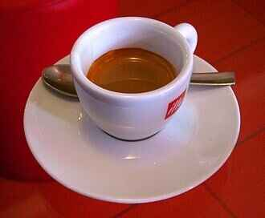
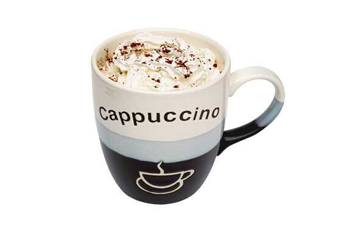

Naša ponuda kafa uključuje najpopularnije vrste kao što su espresso, latte i cappuccino. Bez obzira na to koji tip kafe volite, mi imamo nešto za vas. Naravno, sve naše kafe su dostupne sa različitim nivoima šećera i dodatnim mlekom po vašem izboru.
Proces naručivanja je jednostavan. Izaberite tip kafe, odredite nivo Šećera i dodajte mleko ako želite. Vašu kafu dostavljamo na adresu u najkraćem mogućem roku.
Saznajte više o espresso kafi  Saznajte više o Latte kafi Upoznajte cappuccino kafu 